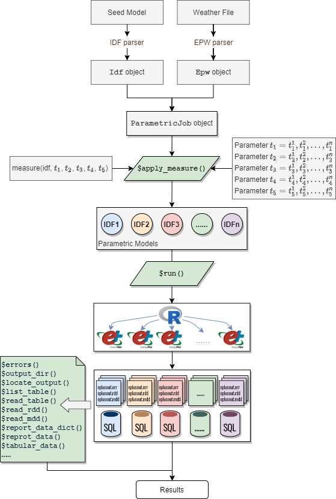
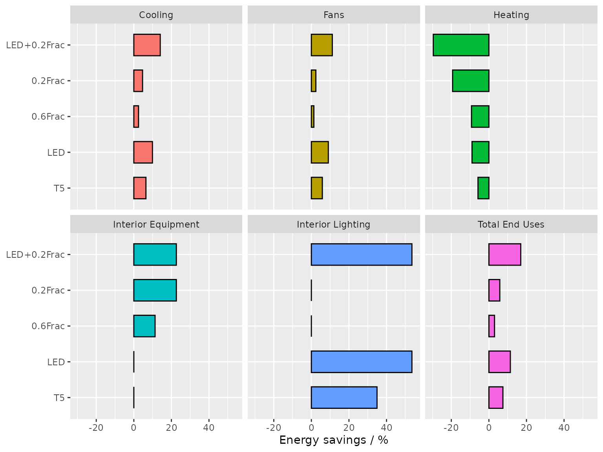

This vignette demonstrates the process of performing parametric simulation analyses using the ParametricJob class. The main focuses are on showcasing the capabilities of (1) creating parametric models by applying measures and (2) easing the comparative analysis by reusing code snippets developed in data exploration process.
The ParametricJob class in eplusr is a parametric prototype that provides a set of abstractions to ease the process of parametric model generation, design alternative evaluation, and large parametric simulation management.
An overview of the parametric prototype implementation is shown blow:
knitr::include_graphics("parametric.png")
A parametric simulation is initialized using param_job() giving a seed model and a weather file.
library(eplusr)
library(dplyr)
path_model <- file.path(eplus_config(8.8)$dir, "ExampleFiles/RefBldgMediumOfficeNew2004_Chicago.idf")
path_weather <- file.path(eplus_config(8.8)$dir, "WeatherData/USA_IL_Chicago-OHare.Intl.AP.725300_TMY3.epw")
idf <- read_idf(path_model)
#> IDD v8.8.0 has not been parsed before.
#> Try to locate 'Energy+.idd' in EnergyPlus v8.8.0 installation folder '/usr/local/EnergyPlus-8-8-0'.
#> IDD file found: '/home/runner/.local/EnergyPlus-8-8-0/Energy+.idd'.
#> Start parsing...
#> Parsing completed.
idf$SimulationControl$Run_Simulation_for_Weather_File_Run_Periods <- "Yes"
idf$OutputControl_Table_Style$Unit_Conversion <- "JtoKWH"
idf$save(file.path(tempdir(), "MediumOffice.idf"), overwrite = TRUE)
# create a parametric prototype of given model and weather file
param <- param_job(idf, path_weather)Design alternatives are specified by applying a measure function to the seed model. The concept of measure in the prototype is inspired by a similar concept in OpenStudio but tailored for flexibility and extensibility.
A measure is simply an R function that takes an Idf object and any other parameters as input, and returns a set of modified Idf objects as output, making it possible to leverage other modules in the framework and apply statistical methods and libraries existing in R to generate design options.
set_lpd() blow is a simple measure that modifies the LPD (Lighting Power Density), and set_nightplug() is a measure that modifies the off-work schedule values of plug loads by multiplying a specified reduction faction value.
# create a measure for modifying LPD
set_lpd <- function (idf, lpd = NA) {
# keep the original if applicable
if (is.na(lpd)) return(idf)
# set 'Watts per Zone Floor Area' in all 'Lights' objects as input LPD
idf$set(Lights := list(watts_per_zone_floor_area = lpd))
# return the modified model
idf
}
# create a measure for reducing plug loads during off-work time
set_nightplug <- function (idf, frac = NA) {
# keep the original if applicable
if (is.na(frac)) return(idf)
# extract the plug load schedule into a tidy table
sch <- idf$to_table("bldg_equip_sch")
# modify certain schedule value specified using field names
sch <- sch %>%
mutate(value = case_when(
field %in% paste("Field", c(4,14,16,18)) ~ sprintf("%.2f", as.numeric(value) * frac),
TRUE ~ value
))
# update schedule object using the tidy table
idf$update(sch)
# return the modified model
idf
}After a measure is defined, the method $apply_measure() takes it and other parameter values specified to create a set of models. Different measures can be chained together.
# combine two measures into one
ecm <- function (idf, lpd, nightplug_frac) {
idf <- set_lpd(idf, lpd)
idf <- set_nightplug(idf, nightplug_frac)
idf
}
# apply measures and create parametric models
param$apply_measure(ecm,
lpd = c( NA, 7.0, 5.0, NA, NA, 5.0),
nightplug_frac = c( NA, NA, NA, 0.6, 0.2, 0.2),
# name of each case
.names = c("Ori", "T5", "LED", "0.6Frac", "0.2Frac", "LED+0.2Frac")
)
#> Warning in sprintf("%.2f", as.numeric(value) * frac): NAs introduced by coercion
#> Warning in sprintf("%.2f", as.numeric(value) * frac): NAs introduced by coercion
#> Warning in sprintf("%.2f", as.numeric(value) * frac): NAs introduced by coercion
#> Measure 'ecm' has been applied with 6 new models created:
#> [1]: Ori
#> [2]: T5
#> [3]: LED
#> [4]: 0.6Frac
#> [5]: 0.2Frac
#> [6]: LED+0.2FracThe $run() method will run all parametric simulations in parallel and place each simulation outputs in a separate folder. All simulation meta data will keep updating during the whole time and can be retrieved using the $status() method for further investigations.
param$run()
#> 1|RUNNING --> [IDF]'Ori.idf' + [EPW]'USA_IL_Chicago-OHare.Intl.AP.725300...
#> 2|RUNNING --> [IDF]'T5.idf' + [EPW]'USA_IL_Chicago-OHare.Intl.AP.725300_...
#> 1|COMPLETED --> [IDF]'Ori.idf' + [EPW]'USA_IL_Chicago-OHare.Intl.AP.725300...
#> 3|RUNNING --> [IDF]'LED.idf' + [EPW]'USA_IL_Chicago-OHare.Intl.AP.725300...
#> 2|COMPLETED --> [IDF]'T5.idf' + [EPW]'USA_IL_Chicago-OHare.Intl.AP.725300_...
#> 4|RUNNING --> [IDF]'0.6Frac.idf' + [EPW]'USA_IL_Chicago-OHare.Intl.AP.72...
#> 3|COMPLETED --> [IDF]'LED.idf' + [EPW]'USA_IL_Chicago-OHare.Intl.AP.725300...
#> 5|RUNNING --> [IDF]'0.2Frac.idf' + [EPW]'USA_IL_Chicago-OHare.Intl.AP.72...
#> 4|COMPLETED --> [IDF]'0.6Frac.idf' + [EPW]'USA_IL_Chicago-OHare.Intl.AP.72...
#> 6|RUNNING --> [IDF]'LED+0.2Frac.idf' + [EPW]'USA_IL_Chicago-OHare.Intl.A...
#> 6|COMPLETED --> [IDF]'LED+0.2Frac.idf' + [EPW]'USA_IL_Chicago-OHare.Intl.A...
#> 5|COMPLETED --> [IDF]'0.2Frac.idf' + [EPW]'USA_IL_Chicago-OHare.Intl.AP.72...
#> ── EnergPlus Parametric Simulation Job ─────────────────────────────────────────
#> * Seed: '/tmp/RtmpA6PTSt/MediumOffice.idf'
#> * Weather: '/home/runner/.local/EnergyPlus-8-8-0/WeatherData/USA_IL_Chicago...
#> * EnergyPlus Version: '8.8.0'
#> * EnergyPlus Path: '/home/runner/.local/EnergyPlus-8-8-0'
#> Applied Measure: 'ecm'
#> Parametric Models [6]:
#> [1]: 'Ori.idf' <-- SUCCEEDED
#> [2]: 'T5.idf' <-- SUCCEEDED
#> [3]: 'LED.idf' <-- SUCCEEDED
#> [4]: '0.6Frac.idf' <-- SUCCEEDED
#> [5]: '0.2Frac.idf' <-- SUCCEEDED
#> [6]: 'LED+0.2Frac.idf' <-- SUCCEEDED
#> Simulation started at '2021-11-15 16:54:48' and completed successfully after 3.31 mins.
param$status()
#> $run_before
#> [1] TRUE
#>
#> $alive
#> [1] FALSE
#>
#> $terminated
#> [1] FALSE
#>
#> $successful
#> [1] TRUE
#>
#> $changed_after
#> [1] FALSE
#>
#> $job_status
#> index status idf
#> 1: 1 completed /tmp/RtmpA6PTSt/Ori/Ori.idf
#> 2: 2 completed /tmp/RtmpA6PTSt/T5/T5.idf
#> 3: 3 completed /tmp/RtmpA6PTSt/LED/LED.idf
#> 4: 4 completed /tmp/RtmpA6PTSt/0.6Frac/0.6Frac.idf
#> 5: 5 completed /tmp/RtmpA6PTSt/0.2Frac/0.2Frac.idf
#> 6: 6 completed /tmp/RtmpA6PTSt/LED+0.2Frac/LED+0.2Frac.idf
#> epw
#> 1: /home/runner/.local/EnergyPlus-8-8-0/WeatherData/USA_IL_Chicago-OHare.Intl.AP.725300_TMY3.epw
#> 2: /home/runner/.local/EnergyPlus-8-8-0/WeatherData/USA_IL_Chicago-OHare.Intl.AP.725300_TMY3.epw
#> 3: /home/runner/.local/EnergyPlus-8-8-0/WeatherData/USA_IL_Chicago-OHare.Intl.AP.725300_TMY3.epw
#> 4: /home/runner/.local/EnergyPlus-8-8-0/WeatherData/USA_IL_Chicago-OHare.Intl.AP.725300_TMY3.epw
#> 5: /home/runner/.local/EnergyPlus-8-8-0/WeatherData/USA_IL_Chicago-OHare.Intl.AP.725300_TMY3.epw
#> 6: /home/runner/.local/EnergyPlus-8-8-0/WeatherData/USA_IL_Chicago-OHare.Intl.AP.725300_TMY3.epw
....The ParametricJob class leverages the tidy data interface to retrieve parametric simulation results in a tidy format. For all resulting tidy tables, an extra column containing the simulation job identifiers is prepended in each table. It can be used as an index or key for further data transformations, analyses and visualization to compare results of different simulated design options.
# read building energy consumption from Standard Reports
param_end_use <- param$tabular_data(table_name = "End Uses", wide = TRUE)[[1L]]
print(param_end_use)
#> index case report_name report_for
#> 1: 1 Ori AnnualBuildingUtilityPerformanceSummary Entire Facility
#> 2: 1 Ori AnnualBuildingUtilityPerformanceSummary Entire Facility
#> 3: 1 Ori AnnualBuildingUtilityPerformanceSummary Entire Facility
#> 4: 1 Ori AnnualBuildingUtilityPerformanceSummary Entire Facility
#> 5: 1 Ori AnnualBuildingUtilityPerformanceSummary Entire Facility
#> 6: 1 Ori AnnualBuildingUtilityPerformanceSummary Entire Facility
#> 7: 1 Ori AnnualBuildingUtilityPerformanceSummary Entire Facility
#> 8: 1 Ori AnnualBuildingUtilityPerformanceSummary Entire Facility
#> 9: 1 Ori AnnualBuildingUtilityPerformanceSummary Entire Facility
#> 10: 1 Ori AnnualBuildingUtilityPerformanceSummary Entire Facility
#> 11: 1 Ori AnnualBuildingUtilityPerformanceSummary Entire Facility
#> 12: 1 Ori AnnualBuildingUtilityPerformanceSummary Entire Facility
#> 13: 1 Ori AnnualBuildingUtilityPerformanceSummary Entire Facility
#> 14: 1 Ori AnnualBuildingUtilityPerformanceSummary Entire Facility
#> 15: 1 Ori AnnualBuildingUtilityPerformanceSummary Entire Facility
#> 16: 2 T5 AnnualBuildingUtilityPerformanceSummary Entire Facility
#> 17: 2 T5 AnnualBuildingUtilityPerformanceSummary Entire Facility
#> 18: 2 T5 AnnualBuildingUtilityPerformanceSummary Entire Facility
#> 19: 2 T5 AnnualBuildingUtilityPerformanceSummary Entire Facility
#> 20: 2 T5 AnnualBuildingUtilityPerformanceSummary Entire Facility
#> 21: 2 T5 AnnualBuildingUtilityPerformanceSummary Entire Facility
#> 22: 2 T5 AnnualBuildingUtilityPerformanceSummary Entire Facility
#> 23: 2 T5 AnnualBuildingUtilityPerformanceSummary Entire Facility
#> 24: 2 T5 AnnualBuildingUtilityPerformanceSummary Entire Facility
#> 25: 2 T5 AnnualBuildingUtilityPerformanceSummary Entire Facility
#> 26: 2 T5 AnnualBuildingUtilityPerformanceSummary Entire Facility
#> 27: 2 T5 AnnualBuildingUtilityPerformanceSummary Entire Facility
#> 28: 2 T5 AnnualBuildingUtilityPerformanceSummary Entire Facility
#> 29: 2 T5 AnnualBuildingUtilityPerformanceSummary Entire Facility
....After calling the $run() method to conduct parallel runs of simulations, the tidy data interface can be used to extract any simulation outputs of interest using $report_data(), $tabular_data(), etc.
In this example, the building energy consumptions of all six models are extracted using one line of code. The resulting data format is the same as that of a single simulation and is equivalent to bind rows from six tables into one tidy table. A case column is prepended using the names specified in $apply_measure(). It works as an identifier to group the results by different parametric models using group_by() and nest() functions from the tidyverse package.
This data structure makes it effortless to perform comparative analyses by taking the code snippets developed in data exploration for a single simulation and applying them to each of the parametric simulations.
# read building area from Standard Reports
area <- param$tabular_data(table_name = "Building Area", wide = TRUE)[[1L]]
# calculate EUI breakdown
param_eui <- param_end_use %>%
select(case, category = row_name, electricity = `Electricity [kWh]`) %>%
filter(electricity > 0.0) %>%
arrange(-electricity) %>%
mutate(eui = round(electricity / area$'Area [m2]'[1], digits = 2)) %>%
select(case, category, eui) %>%
# exclude categories that did not change
filter(category != "Pumps", category != "Exterior Lighting")
print(param_eui)
#> case category eui
#> 1: Ori Total End Uses 152.18
#> 2: 0.6Frac Total End Uses 147.62
#> 3: 0.2Frac Total End Uses 143.35
#> 4: T5 Total End Uses 140.83
#> 5: LED Total End Uses 134.81
#> 6: LED+0.2Frac Total End Uses 126.40
#> 7: Ori Interior Equipment 59.46
#> 8: T5 Interior Equipment 59.46
#> 9: LED Interior Equipment 59.46
#> 10: 0.6Frac Interior Equipment 52.74
#> 11: 0.2Frac Interior Equipment 46.01
#> 12: LED+0.2Frac Interior Equipment 46.01
#> 13: LED+0.2Frac Heating 35.94
#> 14: Ori Interior Lighting 33.80
#> 15: 0.6Frac Interior Lighting 33.80
#> 16: 0.2Frac Interior Lighting 33.80
#> 17: 0.2Frac Heating 33.09
#> 18: 0.6Frac Heating 30.30
#> 19: LED Heating 30.22
#> 20: T5 Heating 29.34
#> 21: Ori Heating 27.73
#> 22: T5 Interior Lighting 21.99
#> 23: LED Interior Lighting 15.71
#> 24: LED+0.2Frac Interior Lighting 15.71
#> 25: Ori Cooling 14.44
#> 26: 0.6Frac Cooling 14.08
#> 27: 0.2Frac Cooling 13.77
#> 28: T5 Cooling 13.51
#> 29: LED Cooling 13.01
....
# extract the seed model, i.e. "Ori" case as the baseline
ori_eui <- param_eui %>% filter(case == "Ori") %>% select(-case)
# calculate energy savings based on the baseline EUI
param_savings <- param_eui %>%
right_join(ori_eui, by = "category", suffix = c("", "_ori")) %>%
mutate(savings = (eui_ori - eui) / eui_ori * 100) %>%
filter(case != "Ori")
print(param_savings)
#> case category eui eui_ori savings
#> 1: 0.6Frac Total End Uses 147.62 152.18 2.996452
#> 2: 0.2Frac Total End Uses 143.35 152.18 5.802339
#> 3: T5 Total End Uses 140.83 152.18 7.458273
#> 4: LED Total End Uses 134.81 152.18 11.414115
#> 5: LED+0.2Frac Total End Uses 126.40 152.18 16.940465
#> 6: T5 Interior Equipment 59.46 59.46 0.000000
#> 7: LED Interior Equipment 59.46 59.46 0.000000
#> 8: 0.6Frac Interior Equipment 52.74 59.46 11.301715
#> 9: 0.2Frac Interior Equipment 46.01 59.46 22.620249
#> 10: LED+0.2Frac Interior Equipment 46.01 59.46 22.620249
#> 11: LED+0.2Frac Heating 35.94 27.73 -29.606924
#> 12: 0.6Frac Interior Lighting 33.80 33.80 0.000000
#> 13: 0.2Frac Interior Lighting 33.80 33.80 0.000000
#> 14: 0.2Frac Heating 33.09 27.73 -19.329246
#> 15: 0.6Frac Heating 30.30 27.73 -9.267941
#> 16: LED Heating 30.22 27.73 -8.979445
#> 17: T5 Heating 29.34 27.73 -5.805986
#> 18: T5 Interior Lighting 21.99 33.80 34.940828
#> 19: LED Interior Lighting 15.71 33.80 53.520710
#> 20: LED+0.2Frac Interior Lighting 15.71 33.80 53.520710
#> 21: 0.6Frac Cooling 14.08 14.44 2.493075
#> 22: 0.2Frac Cooling 13.77 14.44 4.639889
#> 23: T5 Cooling 13.51 14.44 6.440443
#> 24: LED Cooling 13.01 14.44 9.903047
#> 25: LED+0.2Frac Cooling 12.41 14.44 14.058172
#> 26: 0.6Frac Fans 3.72 3.77 1.326260
#> 27: 0.2Frac Fans 3.68 3.77 2.387268
#> 28: T5 Fans 3.55 3.77 5.835544
#> 29: LED Fans 3.43 3.77 9.018568
....
# plot a bar chart to show the energy savings
library(ggplot2)
param_savings %>%
mutate(case = factor(case, names(param$models()))) %>%
ggplot(aes(case, savings, fill = category)) +
geom_bar(position = "dodge", stat = "identity", width = 0.6, color = "black",
show.legend = FALSE) +
facet_wrap(vars(category), nrow = 2) +
labs(x = NULL, y = "Energy savings / %") +
coord_flip()
ParametricJob classThe ParametricJob class is designed to be simple yet flexible and extensible. One good example of its extensibility is the epluspar R package, which provides new classes for conducting specific parametric analyses on EnergyPlus models, including sensitivity analysis, Bayesian calibration and optimization using Generic algorithm.
All the new classes introduced are based on the ParametricJob class. The main difference mainly lies in the specific statistical method used for sampling parameter values when calling $apply_measure() method.